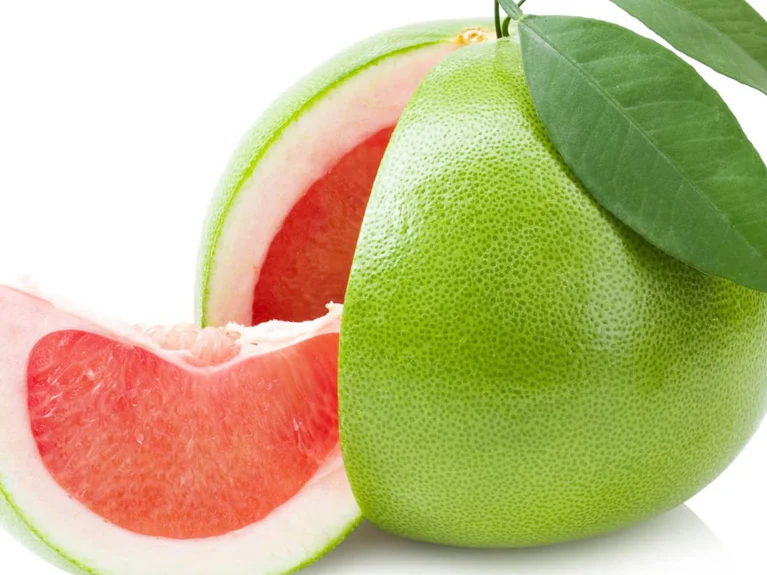
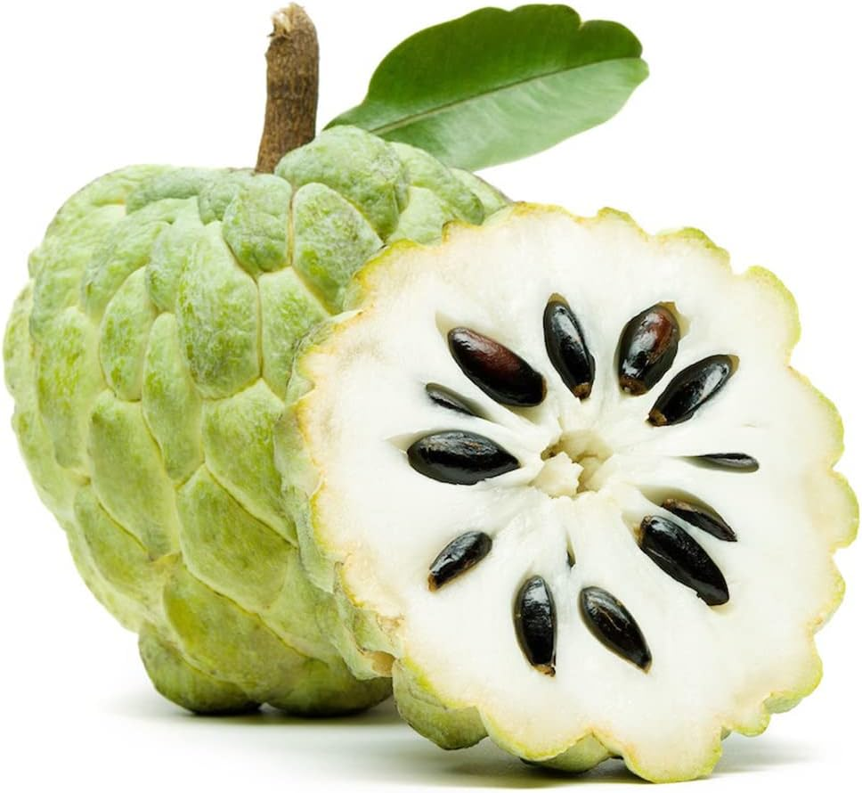
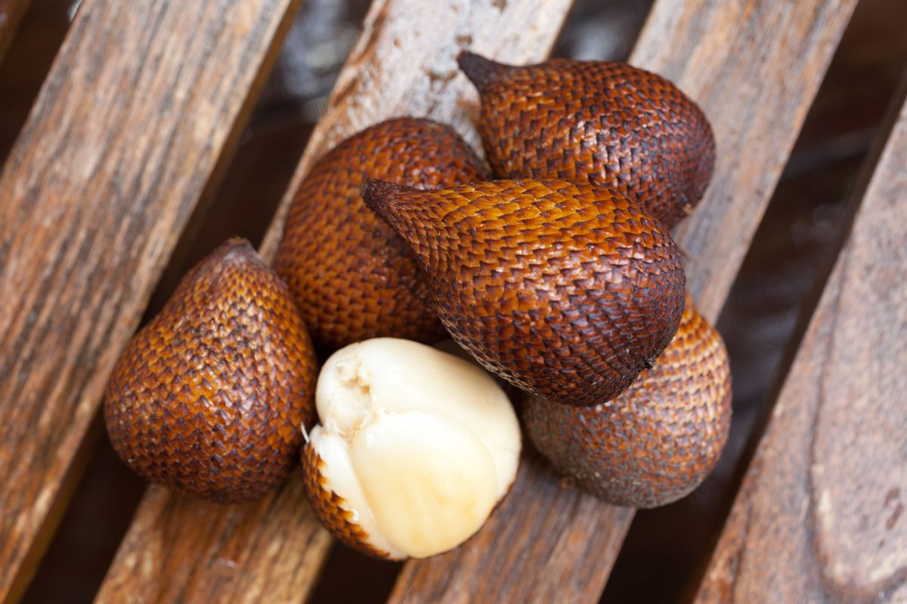
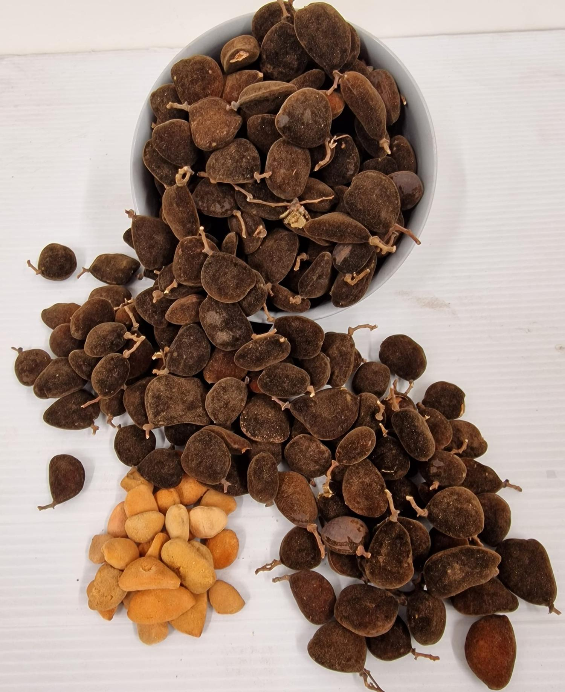

Click links to travel to parts of this page.
Pomelo
Custard Apple
Salak - Snakefruit
Velvet Tamarind
Slideshow
Pomelo

Custard Apple

Salak - Snakefruit

Velvet Tamarind

.....uhhh. Hold on, please. Running into a problem here....you're gonna have to give me a minute.
...errr..right...almost there...
You're welcome.
Open Contact Form
Enter Contact Info
First Name
Last Name
Email
Send Details
Close